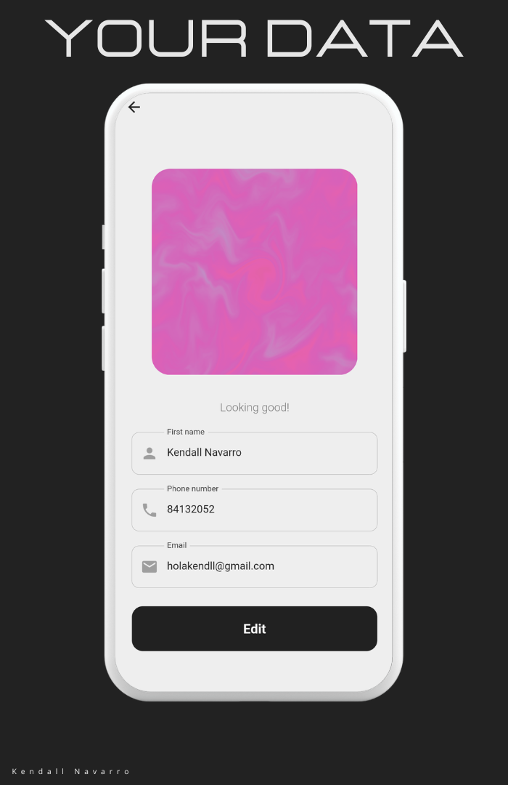
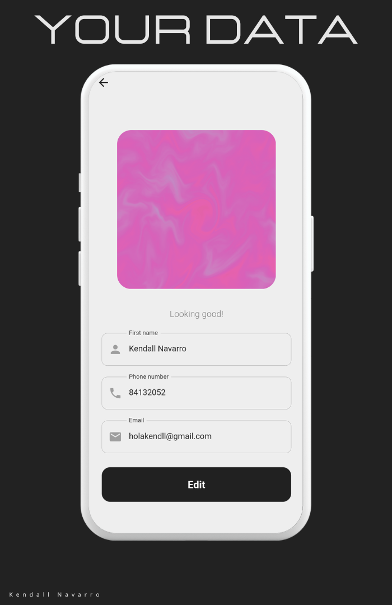
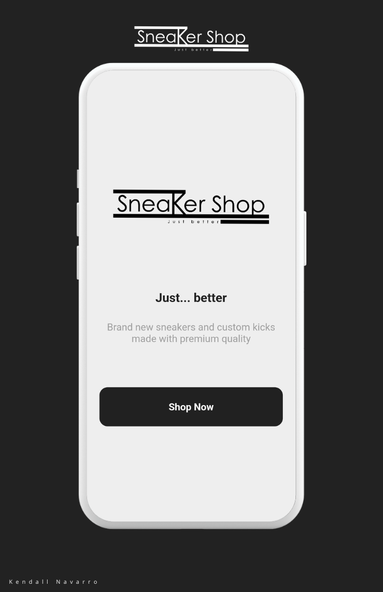
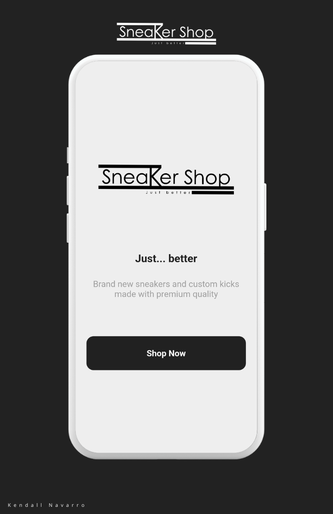

I am a professional systems engineer with experience in application support, full-stack development, and technical solutions open to new opportunities. Currently, I am excelling in my role at Softtek, where I manage diverse infrastructures and environments, providing top-notch technical support and utilizing various technologies. My previous internships have equipped me with a strong foundation in full-stack development and technical solutions, where I contributed to significant improvements in operational efficiency. I hold certifications in essential programming fundamentals and professional software development from reputable institutions. My skills include technical support, infrastructure management, full-stack development, and proficiency in languages such as Spanish and English. I am passionate about leveraging technology to solve complex problems and drive business success.
Systems Engineering : Universidad Fidelitas 2019 - 2023
Phone : (+506) 84132052
Email : Send email
English : B2+
Portfolio
 

 
